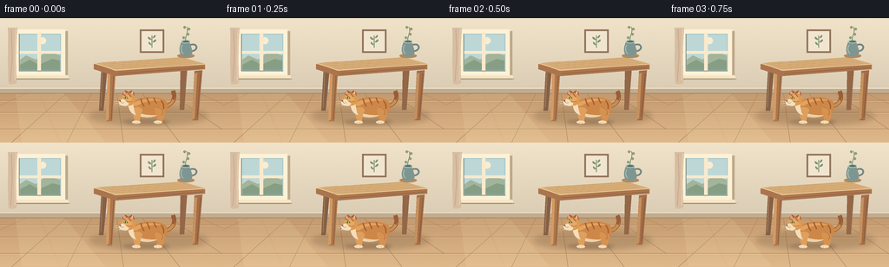
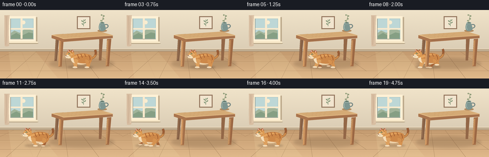

CODING AGENTS AS PIXEL WORLD MODELS
traex/GPT-6.1-Sol · dynamic_spatial_relationship_0015
点击播放 · 原生 RGB 像素
逐轮保存的候选
回放视频、检查图与代码变化。
每份候选均可单独播放。实际图片检查记录在下方工具轨迹中。
候选 01播放与检查图
点击播放 · 原生 RGB 像素


展开代码变化
--- 上一保存版本
+++ 本次保存版本
@@ -0,0 +1,245 @@
+from pathlib import Path
+import math
+import numpy as np
+from PIL import Image, ImageDraw, ImageFilter
+import artifact_io
+
+ROOT=Path(__file__).resolve().parent
+W,H,S=256,144,4
+
+def coords(a): return [(round(x*S),round(y*S)) for x,y in a]
+def poly(d,a,c): d.polygon(coords(a),fill=c)
+def ell(d,b,c): d.ellipse(tuple(round(x*S) for x in b),fill=c)
+def line(d,a,c,w=1): d.line(coords(a),fill=c,width=max(1,round(w*S)),joint='curve')
+def curve(points, steps=28):
+ out=[]
+ for i in range(0,len(points)-1,3):
+ p=points[i:i+4]
+ for t in np.linspace(0,1,steps):
+ v=(1-t)**3*np.array(p[0])+3*(1-t)**2*t*np.array(p[1])+3*(1-t)*t*t*np.array(p[2])+t**3*np.array(p[3])
+ out.append(tuple(v))
+ return out
+
+def path(d,p,c): poly(d,curve(p),c)
+def stroke(d,p,c,w=1): line(d,curve(p),c,w)
+
+# A hand-painted, stationary room, rendered at 4x for smooth contours.
+y,x=np.mgrid[0:H*S,0:W*S]; X=x/S;Y=y/S
+wall=np.zeros((H*S,W*S,3),float)
+for k,(a,b) in enumerate(zip((240,227,201),(218,204,180))): wall[:,:,k]=a+(b-a)*np.clip(Y/88,0,1)
+floor=Y>=86
+for k,(a,b) in enumerate(zip((195,154,111),(224,185,139))): wall[:,:,k]=np.where(floor,a+(b-a)*np.clip((Y-86)/58,0,1),wall[:,:,k])
+rng=np.random.default_rng(32)
+noise=rng.normal(0,.52,wall.shape[:2])
+wall+=noise[:,:,None]
+bg=Image.fromarray(np.uint8(np.clip(wall,0,255)))
+d=ImageDraw.Draw(bg)
+# baseboard and perspective floorboards
+poly(d,[(0,81),(256,81),(256,87),(0,87)],'#c0ac90')
+line(d,[(0,81),(256,81)],'#f4e4c9',1)
+line(d,[(0,87),(256,87)],'#9f8260',.8)
+for yy in [95,109,128]:
+ line(d,[(0,yy),(256,yy)],(164,125,86),.5)
+ line(d,[(0,yy+.65),(256,yy+.65)],(233,195,149),.45)
+for xx in [-190,-90,13,77,142,207,278,355,445]:
+ line(d,[(128+(xx-128)*.45,87),(xx,144)],(165,129,91),.5)
+# translucent sunlight on floor
+sun=Image.new('RGBA',bg.size);sd=ImageDraw.Draw(sun)
+poly(sd,[(18,88),(74,87),(121,143),(25,143)],(255,242,188,28))
+line(sd,[(45,87),(69,143)],(255,248,206,16),2)
+bg=Image.alpha_composite(bg.convert('RGBA'),sun).convert('RGB');d=ImageDraw.Draw(bg)
+# window and sill, with distant greenery
+poly(d,[(15,15),(78,15),(78,71),(15,71)],'#bca98b')
+poly(d,[(17,13),(75,13),(75,67),(17,67)],'#fff1d5')
+poly(d,[(22,18),(70,18),(70,61),(22,61)],'#a6c6c8')
+poly(d,[(23,19),(69,19),(69,60),(23,60)],'#bdd7d6')
+ell(d,(45,22,53,30),'#f9edd0')
+poly(d,[(23,48),(30,43),(41,48),(54,38),(69,43),(69,60),(23,60)],'#a2b49a')
+poly(d,[(23,54),(34,48),(45,54),(60,47),(69,49),(69,60),(23,60)],'#869f84')
+poly(d,[(43,17),(47,17),(47,63),(43,63)],'#f9eacd')
+poly(d,[(21,38),(71,38),(71,41),(21,41)],'#f9eacd')
+line(d,[(22,18),(22,61),(70,61)],'#827e70',.7)
+poly(d,[(13,66),(78,66),(80,70),(13,70)],'#f6e6c6')
+line(d,[(13,70),(80,70)],'#a59375',1)
+# small framed botanical picture on the right wall
+poly(d,[(161,13),(189,13),(189,40),(161,40)],'#92745c')
+poly(d,[(163,15),(187,15),(187,38),(163,38)],'#f2e5cf')
+line(d,[(175,34),(175,20)],'#779071',.9)
+for ox,oy,dx in [(174,24,-5),(176,27,5),(174,30,-4),(176,22,4)]:
+ path(d,[(ox,oy),(ox+dx,oy-6),(ox+dx,oy+1),(ox,oy+1)],'#7e9574')
+# tall linen curtain left of the window
+path(d,[(9,11),(10,28),(8,55),(10,76),(14,77),(19,76),(19,74),(18,56),(18,26),(20,11),(17,11),(12,11),(9,11)],'#d7bda1')
+line(d,[(13,13),(14,43),(12,73)],'#c4a58a',.65)
+line(d,[(18,12),(17,41),(17,72)],'#e7cfb2',1)
+
+# soft stable contact shadows beneath table
+sh=Image.new('RGBA',bg.size);ds=ImageDraw.Draw(sh)
+ell(ds,(103,102,239,124),(69,47,28,47))
+sh=sh.filter(ImageFilter.GaussianBlur(3*S))
+bg=Image.alpha_composite(bg.convert('RGBA'),sh).convert('RGB')
+
+def table_back(im):
+ d=ImageDraw.Draw(im)
+ # rear tapered legs and back apron
+ poly(d,[(117,53),(124,54),(119,107),(114,107)],'#856046')
+ poly(d,[(208,51),(216,52),(212,106),(207,106)],'#936747')
+ line(d,[(118,60),(116,103)],'#ac825c',.7)
+ poly(d,[(119,54),(214,53),(214,61),(119,63)],'#8e6346')
+
+def table_front(im):
+ d=ImageDraw.Draw(im)
+ # legs are in front of the cat so the spatial crossing is visible
+ poly(d,[(124,62),(133,63),(129,119),(122,119)],'#ad774d')
+ poly(d,[(124,63),(127,63),(125,117),(122,119)],'#d39a63')
+ line(d,[(131,65),(128,117)],'#865a3e',.8)
+ poly(d,[(224,61),(233,60),(228,118),(221,118)],'#a46d46')
+ poly(d,[(224,64),(227,63),(224,116),(221,118)],'#c4915f')
+ line(d,[(231,64),(227,114)],'#83573b',.8)
+ # rounded wood top, visible depth and beveled edge
+ poly(d,[(108,53),(210,46),(236,54),(134,63)],'#c99965')
+ poly(d,[(108,53),(134,60),(236,53.7),(236,59),(133,67),(108,59)],'#aa754e')
+ poly(d,[(109,52),(209,45),(237,53),(133,61)],'#d7ad78')
+ line(d,[(109,52),(133,60),(236,53)],'#f1cd96',1)
+ line(d,[(135,64),(234,57)],'#875b3f',.7)
+ # directional fine grain along tabletop
+ for j in range(5):
+ yy=48.3+j*1.8
+ stroke(d,[(116+j*3,yy+3),(147,yy+.4),(180,yy+1),(214+j*3,yy-3)],'#c59763',.4)
+ # a glazed jug at the far right of the table
+ ell(d,(204,41,224,46),'#b08a61')
+ stroke(d,[(219,31),(228,27),(229,39),(219,38)],'#728582',2)
+ path(d,[(209,27),(207,32),(205,38),(209,43),(212,45),(217,45),(221,41),(222,37),(219,31),(218,27),(217,27),(210,27),(209,27)],'#7e9691')
+ stroke(d,[(210,31),(207,35),(209,40),(211,41)],'#abc0b5',1)
+ ell(d,(208.5,25,219,29),'#b3c6ba')
+ ell(d,(210,26,218,28),'#576d64')
+ # a single eucalyptus branch
+ stroke(d,[(214,27),(212,22),(218,15),(215,10)],'#667859',.7)
+ for cx,cy,flip in [(215,19,1),(213,23,-1),(216,13,1),(214,11,-1)]:
+ ell(d,(cx-3 if flip<0 else cx,cy-2,cx if flip<0 else cx+3,cy+1),'#8e9d78')
+
+# Profile cat with articulated legs, tabby markings, white muzzle and whiskers.
+def cat(im,cx,phase,running=0,settle=0):
+ bounce=(-1.5*math.cos(phase*2))*running
+ cy=104+bounce
+ layer=Image.new('RGBA',im.size);d=ImageDraw.Draw(layer)
+ def P(a):return [(cx+x,cy+y) for x,y in a]
+ def pe(b,c):ell(d,(cx+b[0],cy+b[1],cx+b[2],cy+b[3]),c)
+ def pl(a,c,w=1):line(d,P(a),c,w)
+ def ps(a,c,w=1):stroke(d,P(a),c,w)
+ def pf(a,c):path(d,P(a),c)
+ # Tail up and curving to the right; it waves gently as the cat runs.
+ wag=2*math.sin(phase*.55) if running else .8*math.sin(phase)
+ tp=[(16,-2),(28,-2),(32,-12+wag),(28,-20+wag)]
+ ps(tp,'#855032',4.7)
+ ps(tp,'#ce8d4c',3.6)
+ ps([(28,-10+wag),(30,-14+wag),(29,-17+wag),(28,-20+wag)],'#9b5d35',3.7)
+ # Far legs (dark side); gait has alternating fore/hind extension.
+ for hind,offset in [(True,math.pi),(False,0)]:
+ root=12 if hind else -12
+ ang=phase+offset+.9
+ stride=10*math.sin(ang)*running
+ lift=max(0,math.cos(ang))*6*running
+ foot=root+stride;fy=16-lift-bounce
+ knee=root+.45*stride+(3 if hind else -1)
+ pf([(root-3,3),(root-4,8),(knee-2,9),(foot-3,fy-2),
+ (foot-6,fy+1),(foot+3,fy+2),(foot+3,fy-1),
+ (knee+3,8),(root+5,4),(root-3,3)],'#a56438')
+ pe((foot-5,fy-1,foot+3,fy+2),'#e5c6a0')
+ # torso: silky curved back with haunch
+ pf([(-20,-5),(-14,-14),(9,-15),(19,-9),
+ (24,-4),(21,6),(16,9),
+ (7,11),(-7,11),(-16,5),
+ (-20,3),(-23,0),(-20,-5)],'#cd8849')
+ pf([(-19,-5),(-9,-12),(10,-12),(17,-8),
+ (6,-10),(-5,-8),(-13,-3),
+ (-16,-2),(-19,-3),(-19,-5)],'#e4a35d')
+ pf([(-18,0),(-14,6),(-3,9),(10,8),
+ (5,12),(-13,12),(-19,5),
+ (-21,2),(-20,1),(-18,0)],'#eed1a8')
+ # Near articulated legs
+ for hind,offset in [(True,0),(False,math.pi)]:
+ root=12 if hind else -13
+ ang=phase+offset
+ stride=11*math.sin(ang)*running
+ lift=max(0,math.cos(ang))*6.5*running
+ foot=root+stride;fy=16-lift-bounce
+ knee=root+.42*stride+(4 if hind else -1)
+ color='#d59250' if hind else '#dda05e'
+ pf([(root-4,0),(root-7,5),(knee-3,10),(foot-3,fy-2),
+ (foot-7,fy),(foot-5,fy+2),(foot+3,fy+2),
+ (foot+4,fy),(knee+3,9),(root+6,3),
+ (root+6,-1),(root-1,-2),(root-4,0)],color)
+ pe((foot-6,fy-1.5,foot+3.5,fy+2),'#f4ddba')
+ pl([(foot-3,fy+.5),(foot-3,fy+1.5)],'#bba188',.45)
+ pl([(foot,fy+.5),(foot,fy+1.5)],'#bba188',.45)
+ if hind:
+ ps([(10,-1),(16,0),(18,5),(15,8)],'#b4723e',.75)
+ # tabby stripes on shoulder, back and haunch
+ for stripe in [ [(-9,-11),(-8,-7),(-7,-4),(-5,-2)],
+ [(-2,-12),(-1,-9),(1,-6),(1,-4)],
+ [(6,-12),(7,-9),(8,-7),(9,-6)],
+ [(14,-9),(17,-6),(18,-2),(17,1)] ]:
+ ps(stripe,'#a35f32',1.6)
+ # white chest follows the head
+ pf([(-20,-9),(-16,-4),(-18,4),(-14,8),
+ (-20,7),(-23,2),(-23,-3),
+ (-24,-6),(-22,-7),(-20,-9)],'#f5ddb8')
+ # distinct pointed ears, with darker rear edge
+ pf([(-29,-12),(-31,-18),(-29,-24),(-23,-18),
+ (-20,-21),(-17,-23),(-16,-13),
+ (-19,-9),(-26,-9),(-29,-12)],'#a96338')
+ poly(d,P([(-29,-22),(-29,-16),(-25,-16)]),'#d9a190')
+ poly(d,P([(-18,-21),(-21,-16),(-18,-15)]),'#edb4a1')
+ # head and cheek
+ pf([(-31,-13),(-30,-18),(-20,-19),(-16,-14),
+ (-13,-8),(-18,-2),(-24,-3),
+ (-29,-3),(-34,-6),(-33,-10),
+ (-33,-12),(-32,-12),(-31,-13)],'#dc9a53')
+ pe((-31,-15,-19,-5),'#e5aa66')
+ # forehead bars and cheek markings
+ ps([(-29,-16),(-26,-14),(-25,-12),(-24,-11)],'#a56535',1)
+ ps([(-23,-17),(-22,-15),(-21,-14),(-20,-13)],'#a56535',1)
+ ps([(-19,-8),(-22,-7),(-23,-7),(-25,-8)],'#b57843',.7)
+ # white muzzle nose and jaw
+ pe((-34,-10,-26,-3),'#f5e2c0')
+ pe((-31,-7,-23,-2.5),'#f5dfb9')
+ poly(d,P([(-34,-8.5),(-32,-9.2),(-32,-6.8)]),'#895c50')
+ pl([(-32,-6.9),(-30.4,-5.7),(-28.8,-6)],'#8a6448',.55)
+ # almond eye directed toward the left
+ pf([(-29,-12),(-27,-14),(-24.4,-13),(-24,-11.5),
+ (-26,-10.5),(-28,-10.8),(-29,-12)],'#715038')
+ pe((-28.2,-13.1,-25,-10.8),'#b4bd76')
+ pe((-27.2,-13,-26.5,-10.7),'#293733')
+ pe((-27.9,-12.8,-27.25,-12.2),'#fff2d5')
+ # tiny whisker roots and pale whiskers
+ pe((-30,-7.6,-29.5,-7),'#9e7856')
+ pe((-28.5,-7.1,-28,-6.6),'#9e7856')
+ for a in [[(-30,-6.7),(-38,-8)],[(-30,-5.9),(-38,-5.2)],[(-29,-5.3),(-35,-2.8)]]:
+ pl(a,'#f7e6ca',.45)
+ im.alpha_composite(layer)
+
+frames=[]
+for i in range(20):
+ # Establish the starting relation for a full second, then cross to the left.
+ if i<=4:
+ cx=171;running=0;phase=i*.27
+ elif i<=14:
+ u=(i-4)/10
+ # smoothly accelerate and brake, but maintain clear travel in every run frame
+ progress=u*u*(3-2*u)
+ cx=171-114*progress
+ running=math.sin(math.pi*min(1,(i-4)/12))**.4
+ phase=(i-4)*1.7
+ else:
+ cx=57;running=0;phase=i*.28
+ im=bg.convert('RGBA').copy()
+ table_back(im)
+ # Cat's changing contact shadow is grounded under its paws.
+ sh=Image.new('RGBA',im.size);ds=ImageDraw.Draw(sh)
+ ell(ds,(cx-30,117,cx+24,123),(67,44,28,53))
+ sh=sh.filter(ImageFilter.GaussianBlur(1.8*S));im.alpha_composite(sh)
+ cat(im,cx,phase,running)
+ table_front(im)
+ im=im.convert('RGB').resize((W,H),Image.Resampling.LANCZOS)
+ frames.append(np.asarray(im))
+artifact_io.save(np.stack(frames),ROOT)
可观测工具轨迹
实际执行的命令与返回图片。
命令 1exit 0
/bin/bash -lc "ls -la && cat prompt.txt && printf '\\n---RULES---\\n' && cat GENERATION_RULES.md && printf '\\n---SPEC---\\n' && cat task_spec.json"
命令 2exit 0
/bin/bash -lc 'cat artifact_io.py'
命令 3exit 0
/bin/bash -lc "python - <<'PY'
import PIL, numpy
try:
import aggdraw
print('aggdraw available')
except ImportError:
print('no aggdraw')
PY"命令 4exit 1
/bin/bash -lc "cat > generate.py <<'PY'
from pathlib import Path
import math
import numpy as np
from PIL import Image, ImageDraw, ImageFilter
import artifact_io
ROOT=Path(__file__).resolve().parent
W,H,S=256,144,4
def coords(a): return [(round(x*S),round(y*S)) for x,y in a]
def poly(d,a,c): d.polygon(coords(a),fill=c)
def ell(d,b,c): d.ellipse(tuple(round(x*S) for x in b),fill=c)
def line(d,a,c,w=1): d.line(coords(a),fill=c,width=max(1,round(w*S)),joint='curve')
def curve(points, steps=28):
out=[]
for i in range(0,len(points)-1,3):
p=points[i:i+4]
for t in np.linspace(0,1,steps):
v=(1-t)**3*np.array(p[0])+3*(1-t)**2*t*np.array(p[1])+3*(1-t)*t*t*np.array(p[2])+t**3*np.array(p[3])
out.append(tuple(v))
return out
def path(d,p,c): poly(d,curve(p),c)
def stroke(d,p,c,w=1): line(d,curve(p),c,w)
# A hand-painted, stationary room, rendered at 4x for smooth contours.
y,x=np.mgrid[0:H*S,0:W*S]; X=x/S;Y=y/S
wall=np.zeros((H*S,W*S,3),float)
for k,(a,b) in enumerate(zip((240,227,201),(218,204,180))): wall[:,:,k]=a+(b-a)*np.clip(Y/88,0,1)
floor=Y>=86
for k,(a,b) in enumerate(zip((195,154,111),(224,185,139))): wall[:,:,k]=np.where(floor,a+(b-a)*np.clip((Y-86)/58,0,1),wall[:,:,k])
rng=np.random.default_rng(32)
noise=rng.normal(0,.52,wall.shape[:2])
wall+=noise[:,:,None]
bg=Image.fromarray(np.uint8(np.clip(wall,0,255)))
d=ImageDraw.Draw(bg)
# baseboard and perspective floorboards
poly(d,[(0,81),(256,81),(256,87),(0,87)],'#c0ac90')
line(d,[(0,81),(256,81)],'#f4e4c9',1)
line(d,[(0,87),(256,87)],'#9f8260',.8)
for yy in [95,109,128]:
line(d,[(0,yy),(256,yy)],(164,125,86),.5)
line(d,[(0,yy+.65),(256,yy+.65)],(233,195,149),.45)
for xx in [-190,-90,13,77,142,207,278,355,445]:
line(d,[(128+(xx-128)*.45,87),(xx,144)],(165,129,91),.5)
# translucent sunlight on floor
sun=Image.new('RGBA',bg.size);sd=ImageDraw.Draw(sun)
poly(sd,[(18,88),(74,87),(121,143),(25,143)],(255,242,188,28))
line(sd,[(45,87),(69,143)],(255,248,206,16),2)
bg=Image.alpha_composite(bg.convert('RGBA'),sun).convert('RGB');d=ImageDraw.Draw(bg)
# window and sill, with distant greenery
poly(d,[(15,15),(78,15),(78,71),(15,71)],'#bca98b')
poly(d,[(17,13),(75,13),(75,67),(17,67)],'#fff1d5')
poly(d,[(22,18),(70,18),(70,61),(22,61)],'#a6c6c8')
poly(d,[(23,19),(69,19),(69,60),(23,60)],'#bdd7d6')
ell(d,(45,22,53,30),'#f9edd0')
poly(d,[(23,48),(30,43),(41,48),(54,38),(69,43),(69,60),(23,60)],'#a2b49a')
poly(d,[(23,54),(34,48),(45,54),(60,47),(69,49),(69,60),(23,60)],'#869f84')
poly(d,[(43,17),(47,17),(47,63),(43,63)],'#f9eacd')
poly(d,[(21,38),(71,38),(71,41),(21,41)],'#f9eacd')
line(d,[(22,18),(22,61),(70,61)],'#827e70',.7)
poly(d,[(13,66),(78,66),(80,70),(13,70)],'#f6e6c6')
line(d,[(13,70),(80,70)],'#a59375',1)
# small framed botanical picture on the right wall
poly(d,[(161,13),(189,13),(189,40),(161,40)],'#92745c')
poly(d,[(163,15),(187,15),(187,38),(163,38)],'#f2e5cf')
line(d,[(175,34),(175,20)],'#779071',.9)
for ox,oy,dx in [(174,24,-5),(176,27,5),(174,30,-4),(176,22,4)]:
path(d,[(ox,oy),(ox+dx,oy-6),(ox+dx,oy+1),(ox,oy+1)],'#7e9574')
# tall linen curtain left of the window
path(d,[(9,11),(10,28),(8,55),(10,76),(14,77),(19,76),(19,74),(18,56),(18,26),(20,11),(17,11),(12,11),(9,11)],'#d7bda1')
line(d,[(13,13),(14,43),(12,73)],'#c4a58a',.65)
line(d,[(18,12),(17,41),(17,72)],'#e7cfb2',1)
# soft stable contact shadows beneath table
sh=Image.new('RGBA',bg.size);ds=ImageDraw.Draw(sh)
ell(ds,(103,102,239,124),(69,47,28,47))
sh=sh.filter(ImageFilter.GaussianBlur(3*S))
bg=Image.alpha_composite(bg.convert('RGBA'),sh).convert('RGB')
def table_back(im):
d=ImageDraw.Draw(im)
# rear tapered legs and back apron
poly(d,[(117,53),(124,54),(119,107),(114,107)],'#856046')
poly(d,[(208,51),(216,52),(212,106),(207,106)],'#936747')
line(d,[(118,60),(116,103)],'#ac825c',.7)
poly(d,[(119,54),(214,53),(214,61),(119,63)],'#8e6346')
def table_front(im):
d=ImageDraw.Draw(im)
# legs are in front of the cat so the spatial crossing is visible
poly(d,[(124,62),(133,63),(129,119),(122,119)],'#ad774d')
poly(d,[(124,63),(127,63),(125,117),(122,119)],'#d39a63')
line(d,[(131,65),(128,117)],'#865a3e',.8)
poly(d,[(224,61),(233,60),(228,118),(221,118)],'#a46d46')
poly(d,[(224,64),(227,63),(224,116),(221,118)],'#c4915f')
line(d,[(231,64),(227,114)],'#83573b',.8)
# rounded wood top, visible depth and beveled edge
poly(d,[(108,53),(210,46),(236,54),(134,63)],'#c99965')
poly(d,[(108,53),(134,60),(236,53.7),(236,59),(133,67),(108,59)],'#aa754e')
poly(d,[(109,52),(209,45),(237,53),(133,61)],'#d7ad78')
line(d,[(109,52),(133,60),(236,53)],'#f1cd96',1)
line(d,[(135,64),(234,57)],'#875b3f',.7)
# directional fine grain along tabletop
for j in range(5):
yy=48.3+j*1.8
stroke(d,[(116+j*3,yy+3),(147,yy+.4),(180,yy+1),(214+j*3,yy-3)],'#c59763',.4)
# a glazed jug at the far right of the table
ell(d,(204,41,224,46),'#b08a61')
stroke(d,[(219,31),(228,27),(229,39),(219,38)],'#728582',2)
path(d,[(209,27),(207,32),(205,38),(209,43),(212,45),(217,45),(221,41),(222,37),(219,31),(218,27),(217,27),(210,27),(209,27)],'#7e9691')
stroke(d,[(210,31),(207,35),(209,40),(211,41)],'#abc0b5',1)
ell(d,(208.5,25,219,29),'#b3c6ba')
ell(d,(210,26,218,28),'#576d64')
# a single eucalyptus branch
stroke(d,[(214,27),(212,22),(218,15),(215,10)],'#667859',.7)
for cx,cy,flip in [(215,19,1),(213,23,-1),(216,13,1),(214,11,-1)]:
ell(d,(cx-3 if flip<0 else cx,cy-2,cx if flip<0 else cx+3,cy+1),'#8e9d78')
# Profile cat with articulated legs, tabby markings, white muzzle and whiskers.
def cat(im,cx,phase,running=0,settle=0):
bounce=(-1.5*math.cos(phase*2))*running
cy=104+bounce
layer=Image.new('RGBA',im.size);d=ImageDraw.Draw(layer)
def P(a):return [(cx+x,cy+y) for x,y in a]
def pe(b,c):ell(d,(cx+b[0],cy+b[1],cx+b[2],cy+b[3]),c)
def pl(a,c,w=1):line(d,P(a),c,w)
def ps(a,c,w=1):stroke(d,P(a),c,w)
def pf(a,c):path(d,P(a),c)
# Tail up and curving to the right; it waves gently as the cat runs.
wag=2*math.sin(phase*.55) if running else .8*math.sin(phase)
tp=[(16,-2),(28,-2),(32,-12+wag),(28,-20+wag)]
ps(tp,'#855032',4.7)
ps(tp,'#ce8d4c',3.6)
ps([(28,-10+wag),(30,-14+wag),(29,-17+wag),(28,-20+wag)],'#9b5d35',3.7)
# Far legs (dark side); gait has alternating fore/hind extension.
for hind,offset in [(True,math.pi),(False,0)]:
root=12 if hind else -12
ang=phase+offset+.9
stride=10*math.sin(ang)*running
lift=max(0,math.cos(ang))*6*running
foot=root+stride;fy=16-lift-bounce
knee=root+.45*stride+(3 if hind else -1)
pf([(root-3,3),(root-4,8),(knee-2,9),(foot-3,fy-2),
(foot-6,fy+1),(foot+3,fy+2),(foot+3,fy-1),
(knee+3,8),(root+5,4),(root-3,3)],'#a56438')
pe((foot-5,fy-1,foot+3,fy+2),'#e5c6a0')
# torso: silky curved back with haunch
pf([(-20,-5),(-14,-14),(9,-15),(19,-9),
(24,-4),(21,6),(16,9),
(7,11),(-7,11),(-16,5),
(-20,3),(-23,0),(-20,-5)],'#cd8849')
pf([(-19,-5),(-9,-12),(10,-12),(17,-8),
(6,-10),(-5,-8),(-13,-3),
(-16,-2),(-19,-3),(-19,-5)],'#e4a35d')
pf([(-18,0),(-14,6),(-3,9),(10,8),
(5,12),(-13,12),(-19,5),
(-21,2),(-20,1),(-18,0)],'#eed1a8')
# Near articulated legs
for hind,offset in [(True,0),(False,math.pi)]:
root=12 if hind else -13
ang=phase+offset
stride=11*math.sin(ang)*running
lift=max(0,math.cos(ang))*6.5*running
foot=root+stride;fy=16-lift-bounce
knee=root+.42*stride+(4 if hind else -1)
color='#d59250' if hind else '#dda05e'
pf([(root-4,0),(root-7,5),(knee-3,10),(foot-3,fy-2),
(foot-7,fy),(foot-5,fy+2),(foot+3,fy+2),
(foot+4,fy),(knee+3,9),(root+6,3),(root-4,0)],color)
pe((foot-6,fy-1.5,foot+3.5,fy+2),'#f4ddba')
pl([(foot-3,fy+.5),(foot-3,fy+1.5)],'#bba188',.45)
pl([(foot,fy+.5),(foot,fy+1.5)],'#bba188',.45)
if hind:
ps([(10,-1),(16,0),(18,5),(15,8)],'#b4723e',.75)
# tabby stripes on shoulder, back and haunch
for stripe in [ [(-9,-11),(-8,-7),(-7,-4),(-5,-2)],
[(-2,-12),(-1,-9),(1,-6),(1,-4)],
[(6,-12),(7,-9),(8,-7),(9,-6)],
[(14,-9),(17,-6),(18,-2),(17,1)] ]:
ps(stripe,'#a35f32',1.6)
# white chest follows the head
pf([(-20,-9),(-16,-4),(-18,4),(-14,8),
(-20,7),(-23,2),(-23,-3),
(-24,-6),(-22,-7),(-20,-9)],'#f5ddb8')
# distinct pointed ears, with darker rear edge
pf([(-29,-12),(-31,-18),(-29,-24),(-23,-18),
(-20,-21),(-17,-23),(-16,-13),
(-19,-9),(-26,-9),(-29,-12)],'#a96338')
poly(d,P([(-29,-22),(-29,-16),(-25,-16)]),'#d9a190')
poly(d,P([(-18,-21),(-21,-16),(-18,-15)]),'#edb4a1')
# head and cheek
pf([(-31,-13),(-30,-18),(-20,-19),(-16,-14),
(-13,-8),(-18,-2),(-24,-3),
(-29,-3),(-34,-6),(-33,-10),
(-33,-12),(-32,-12),(-31,-13)],'#dc9a53')
pe((-31,-15,-19,-5),'#e5aa66')
# forehead bars and cheek markings
ps([(-29,-16),(-26,-14),(-25,-12),(-24,-11)],'#a56535',1)
ps([(-23,-17),(-22,-15),(-21,-14),(-20,-13)],'#a56535',1)
ps([(-19,-8),(-22,-7),(-23,-7),(-25,-8)],'#b57843',.7)
# white muzzle nose and jaw
pe((-34,-10,-26,-3),'#f5e2c0')
pe((-31,-7,-23,-2.5),'#f5dfb9')
poly(d,P([(-34,-8.5),(-32,-9.2),(-32,-6.8)]),'#895c50')
pl([(-32,-6.9),(-30.4,-5.7),(-28.8,-6)],'#8a6448',.55)
# almond eye directed toward the left
pf([(-29,-12),(-27,-14),(-24.4,-13),(-24,-11.5),
(-26,-10.5),(-28,-10.8),(-29,-12)],'#715038')
pe((-28.2,-13.1,-25,-10.8),'#b4bd76')
pe((-27.2,-13,-26.5,-10.7),'#293733')
pe((-27.9,-12.8,-27.25,-12.2),'#fff2d5')
# tiny whisker roots and pale whiskers
pe((-30,-7.6,-29.5,-7),'#9e7856')
pe((-28.5,-7.1,-28,-6.6),'#9e7856')
for a in [[(-30,-6.7),(-38,-8)],[(-30,-5.9),(-38,-5.2)],[(-29,-5.3),(-35,-2.8)]]:
pl(a,'#f7e6ca',.45)
im.alpha_composite(layer)
frames=[]
for i in range(20):
# Establish the starting relation for a full second, then cross to the left.
if i<=4:
cx=171;running=0;phase=i*.27
elif i<=14:
u=(i-4)/10
# smoothly accelerate and brake, but maintain clear travel in every run frame
progress=u*u*(3-2*u)
cx=171-114*progress
running=math.sin(math.pi*min(1,(i-4)/12))**.4
phase=(i-4)*1.7
else:
cx=57;running=0;phase=i*.28
im=bg.convert('RGBA').copy()
table_back(im)
# Cat's changing contact shadow is grounded under its paws.
sh=Image.new('RGBA',im.size);ds=ImageDraw.Draw(sh)
ell(ds,(cx-30,117,cx+24,123),(67,44,28,53))
sh=sh.filter(ImageFilter.GaussianBlur(1.8*S));im.alpha_composite(sh)
cat(im,cx,phase,running)
table_front(im)
im=im.convert('RGB').resize((W,H),Image.Resampling.LANCZOS)
frames.append(np.asarray(im))
artifact_io.save(np.stack(frames),ROOT)
PY
python generate.py"命令 5exit 0
/bin/bash -lc "python - <<'PY'
import ast
tr=ast.parse(open('generate.py').read())
for n in ast.walk(tr):
if isinstance(n,ast.Call) and isinstance(n.func,ast.Name) and n.func.id in ['pf','path','stroke','ps']:
a=n.args[1] if n.func.id in ['path','stroke'] else n.args[0]
if isinstance(a,ast.List) and len(a.elts)%3 "'!=1: print(n.lineno,n.func.id,len(a.elts))
PY'命令 6exit 0
/bin/bash -lc "python - <<'PY'
p='generate.py'
s=open(p).read().replace('(foot+4,fy),(knee+3,9),(root+6,3),(root-4,0)],color)','(foot+4,fy),(knee+3,9),(root+6,3),\\n (root+6,-1),(root-1,-2),(root-4,0)],color)')
open(p,'w').write(s)
PY
python generate.py"视觉工具实际返回图片 1

保存候选 1 份；完成命令 6 次；可验证图片返回 1 张。原始 API 响应与完整日志保留在本地。